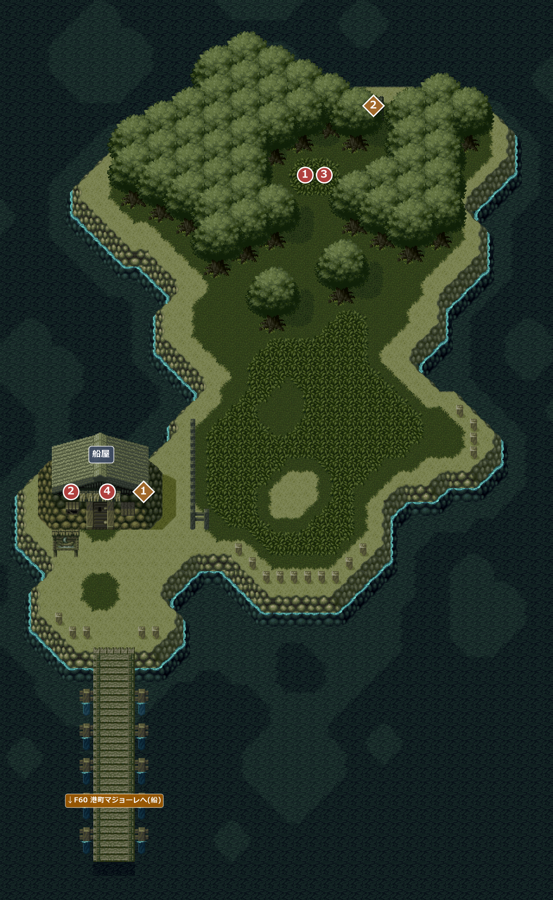
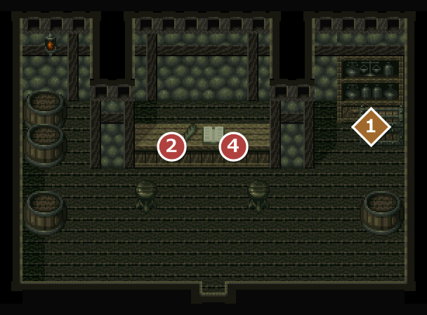

FIELD68
鳥の島
エンカウント率0%鳥たちが暮らす小さな島。マキバが鳥の王に会いに来る。
名前 建物・場所→ ほかの FIELD へ1メインイベント1宝箱・落ちている物

イベント
1
鳥の王
場所: 島の北の草地の鳥の王(X68 Y33)
マキバが、極上の羽ペンの材料になる羽根を鳥の王に頼む。王は、ノルティナのチクタク館に囚われた仲間を救ってくれたら羽根をあげると答え、チクタク館の鍵を預けてくれる。
入手 チクタク館の鍵
チクタク館の鍵
次へ船屋へ(②)。
2
船で戻る
場所: 船屋の店員(X20 Y13)
マキバが船を頼むと、桟橋で待つよう言われる。桟橋の先で待つと船が来て、港町マジョーレへ戻る。
！鳥の王と話す前に話しかけても、マキバ「鳥の王さまとの話が終わったら、ここに来るとしよう」と言うだけで、船は呼べない。
次へマジョーレからノルティナ学園都市を通ってF67 学園内のチクタク館へ。
F67 学園内のチクタク館で鳥たちを救ったあと
3
素晴らしい羽根
場所: 島の北の草地の鳥の王(X68 Y33)
仲間を救われた王は大喜びで、約束どおり、王の羽根を渡してくれる。
入手 素晴らしい羽根
素晴らしい羽根
次へ船屋へ(④)。
4
船で戻る(2回目)
場所: 船屋の店員(X20 Y13)
もう一度、船でマジョーレへ戻る。
！羽根をもらう前に話しかけても、主人公「今の所、他の島に行く必要はないと思うが…」と断られる。
次へマジョーレからF69 ノルティナの山道のサンジャックへ。
宝箱・落ちている物
1
宝箱
場所: 船屋の中(X34-36 Y15)
開ける前に、店員が「誰かの忘れ物みたいなんですが、誰も取りに来ないので…持ってっちゃって下さい」と言う。「箱を開けると、中には古い楽譜が入っていた。『風の壁の歌』だ！」
入手 風の壁の歌
風の壁の歌
バグこの宝箱を開けた後、船屋を出て入口の前の道(X36-40 Y105)を通ってからもう一度入ると、宝箱が閉じた絵に戻っていることがある(中身はもう取れない)。道のマスが確かめているフラグが、船屋の宝箱の分ではなく、島の北東の宝箱(◆2)を開けたかどうかになっているため。北東の宝箱を先に開けていれば起きない。
2
宝箱
場所: 島の北東の崖の上(X74-76 Y21)
「箱を開けると、中には魔法のペンダントが入っていた。」
入手 風のペンダント
風のペンダント
部屋
6801鳥の島の船屋

24船を頼む 1風の壁の歌
没イベント情報
- 没2回目に来たときのマキバと店員の会話がディスク内に残されている … 船屋(6801)の店員(X20 Y13)。2回目に鳥の島へ来たとき、鳥の王と話す前の会話と見られるが、そこへ飛ぶ文が無く、出ない(初回の「マジョーレまでの船はよくあるんだよね？」の差し替え候補)マキバ「やあ！ この間はどうも。また、船に乗せてもらう事になるようだよ」店員「そうですか。船はどんどん来ますから、適当なのに乗ればいいですからね」マキバ「また、鳥の王さまとの話が終わったら、ここに来るとしよう」